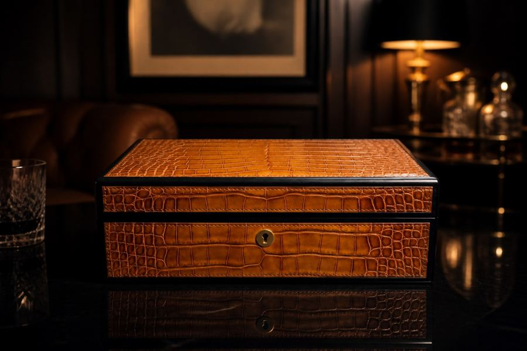
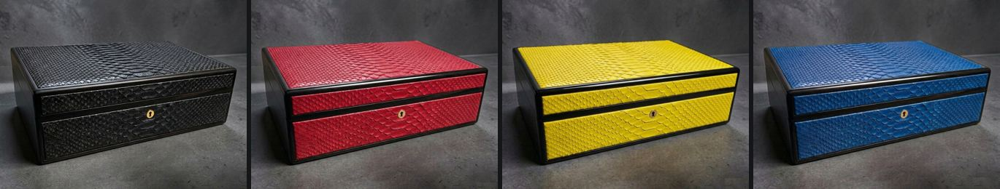
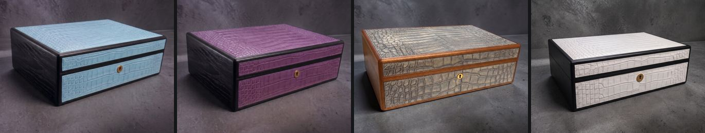
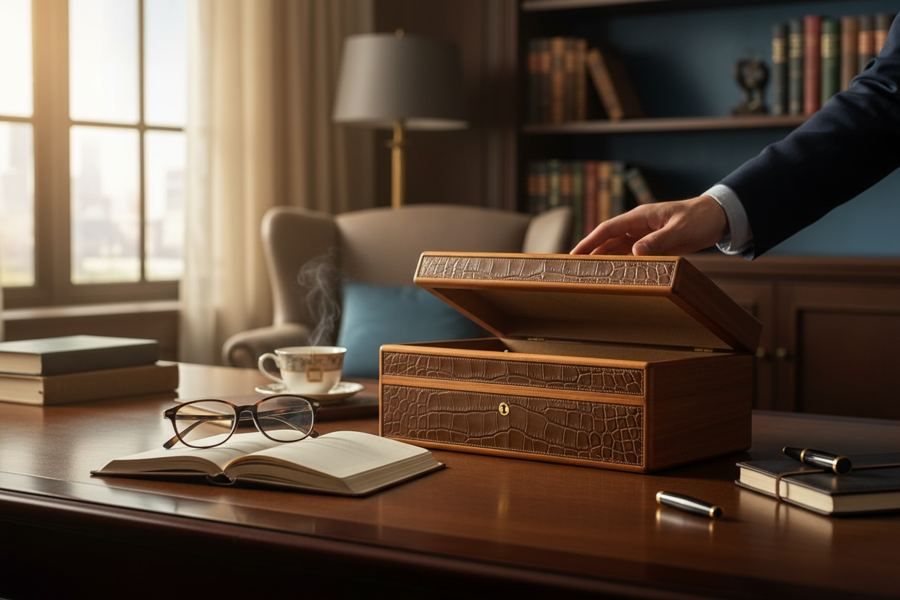
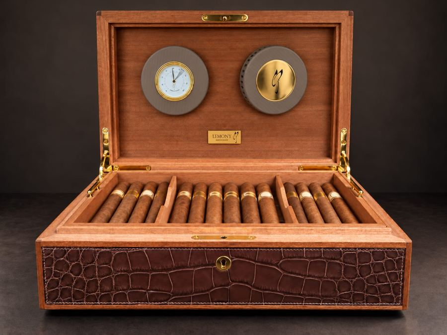
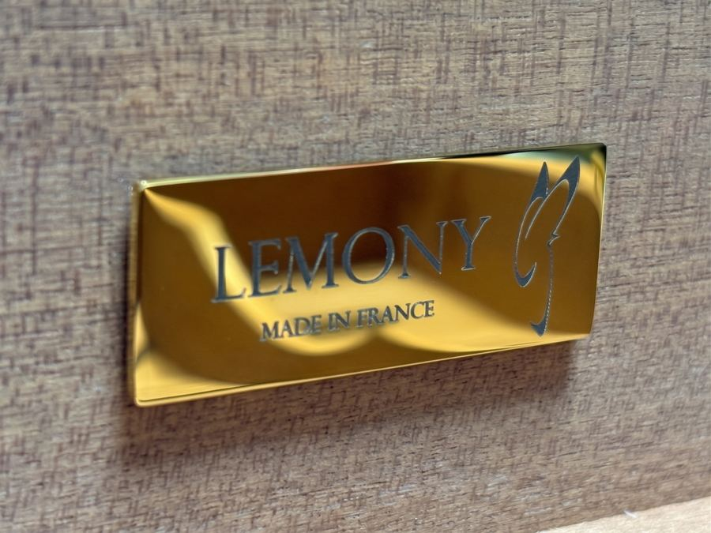
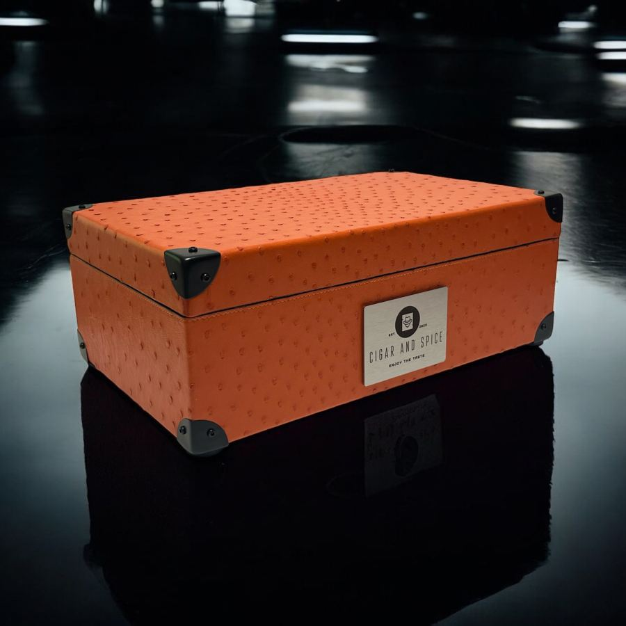
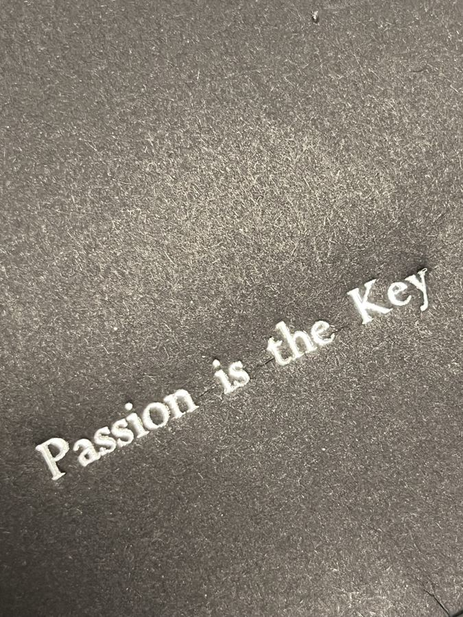

Caves à cigares sur mesure, en cuirs précieux

Le récit est déjà très fort, et c'est l'atout n°1 du site. Le luxe se vend par la légitimité, et ici elle est réelle et vérifiable.
« Le cuir, une matière qui a une histoire et une odeur. »
| Collection | Cuirs | Coloris photo |
|---|---|---|
| Héritage | Veau, bovin, agneau, chèvre | ~10 |
| Élégance | Lézard / autruche | 9 + 9 |
| Excellence | Python | 9 |
| Prestige | Alligator, porosus, niloticus | ~22, plus des éditions : Black, Carbone, Polar White, Shadow Blue… |


Autres objets vus dans les fichiers : flasques gainées, étuis à cigares (« road case », « spirit tank »), plateau-vide-poche, petite maroquinerie.
| Asset | Qté | Verdict |
|---|---|---|
| Packshots caves par couleur (fond béton gris, même cadrage) | ~90 | Top cohérents, parfaits pour un sélecteur de couleur |
| « SELECTION FINALE SITE » (choix de Sam) | 58 | Moyen 1/3 trop petits (≈900 px) |
| Visuels générés par IA (Gemini, Photoroom) | 30+ | Risque voir ci-dessous |
| Brochure FR + EN (8 pages) | 2 | Top textes quasi prêts, ton juste |
| Présentation « Lemony » (A4, 5 p.) | 1 | Top base de la page « Maison » |
| Logo (calligramme + LEMONY) | mockups | Manque pas de fichier vectoriel |
| Presse (3 PDF + magazine) | 4 | Bon |
| Partenariats (Cigar&Spice, Jazz) | 20 | Bon photos réelles |
| Vidéo Jazz à Vienne (1080p, 1 min) | 1 | Moyen diaporama, pas un film produit |
| Ambiances (cigare + cognac) | 2 | Stock génériques |


À gauche, une mise en scène IA. À droite, une cave ouverte avec deux cadrans : elle n'apparaît qu'en 3 variantes.
À ce prix-là, personne n'ajoute une cave au panier. Le site doit faire désirer, rassurer, puis déclencher un rendez-vous : échange avec Sam, visio, visite d'atelier ou présentation sur site.
Positionnement possible : « La haute maroquinerie française, au service du cigare. »
| Amateur fortuné | Pièce unique, signature, histoire à raconter |
| Golf / clubs | Pièce de clubhouse, cadeaux de tournoi, éditions aux couleurs du club |
| Yachting | Sur-mesure à bord, résistance à l'humidité, accord avec l'intérieur du bateau |
| Cadres / cadeaux d'affaires | Gravure, délais fiables, devis rapide |
| B2B (palaces, lounges, cavistes) | Co-branding façon Cigar and Spice, revente |



« J'ai les goûts les plus simples du monde, je me contente du meilleur. » — Oscar Wilde, citation de la brochure